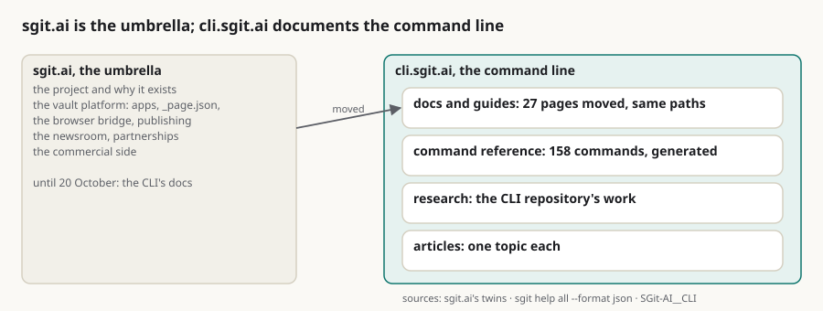

The CLI gets its own site: cli.sgit.ai documents the command line, and sgit.ai becomes the umbrella
Summary: This is the brief for the agent building the site for the sgit command-line tool, at cli.sgit.ai, and the idea is to make it the main documentation for the CLI. Until now we have been using sgit.ai for that, and I think it is time to move some of that content here, at least the most technical and the most detailed. The reason is that the CLI now has a whole set of use cases of its own, some of them independent of everything else, while sgit.ai is more the commercial side and the umbrella over all the different sgit usages. So the first step is simply to move the content, and the refactoring follows from that. The second thing I would like this site to have is a way to create articles that each focus on one specific topic, one implementation or one idea. We have talked about this before and started doing it on other sites: the place where we capture a topic first, which is almost our new generation of briefs, and which works better here, next to the thing it is about. On the first day that came to 27 pages moved from sgit.ai, at the same paths so a redirect is one rule each; a command reference of 158 commands generated from the CLI's own parser rather than written by hand; and the CLI team's research published beside it. What sgit.ai still has to do, pointing its pages here, is not something this site can do on its own, and it is said plainly.
cli documentation sgit-ai refactor briefs articles reference umbrella network

In short
- cli.sgit.ai is the main documentation for the sgit CLI. Until 20 October that was sgit.ai.
- The most technical and detailed content moves first. 27 pages moved from sgit.ai on the first day, at the same paths, with the text as it was.
- The reason is that the CLI has use cases of its own, some independent of the rest of sgit, and sgit.ai is the umbrella and the commercial side.
- The site has a place for articles on one topic, one implementation or one idea. They are the new generation of briefs, captured first next to the thing they describe.
- The command reference is generated, not written: 158 commands from the CLI's own
sgit help all --format json. - sgit.ai still serves the moved pages until its own team points them here. That part is proposed, not done.
Why the CLI needs a site of its own
The sgit command-line tool started as the client for one thing, the encrypted vault, and its documentation lived where the vault's did, on sgit.ai. It has outgrown that. The CLI is now used by agents on shared vaults every day, it runs a vault locally, it signs history, it clones one folder of a vault with a depth, and some of those uses have nothing to do with the rest of the project. sgit.ai, meanwhile, has become the umbrella: the project, the vault platform, the newsroom, the partnerships, the commercial side. A reader who wants to know what sgit clone --path does should not have to find it between a case study and a partnership page.
Move the technical content first
So the first step is to move the content, and refactor from there. The pages that moved are the ones about the command line itself: installing it, the quickstart, the mapping from git, the two-branch model, partial clones, history integrity, agents sharing a vault, messaging between vaults, self-hosting, the security model, keys and credentials, and the HTTP API the CLI is a client of. They kept their paths, so sgit.ai/docs/quickstart.html is now cli.sgit.ai/docs/quickstart.html, and each says where it came from. The pages about vaults as a platform, vault apps and publishing a vault, stayed on sgit.ai, because they are about the vault rather than the command line. What moved, and why has the list.
A place for articles on one topic
The second thing is a place for articles that each take one topic, one implementation or one idea as far as it goes. We have talked about this before and started it on other sites: the article is where a topic is captured first, and it is almost our new generation of briefs. It works better here, next to the commands and the code it is about, than in a general feed. The CLI team already writes this way in its repository, as research notes, designs and measurements, and those are published here too, in their own area.
sgit.ai as the umbrella
None of this makes sgit.ai smaller. It makes it clearer: the umbrella over every way sgit is used, with the CLI as one of them, documented on its own site and linked from the network. The refactoring follows the usage.
What this does not claim
- The move is not finished. The pages exist on both sites until sgit.ai links and redirects them here; the copy on cli.sgit.ai is the one maintained.
- "The most technical" is a line someone drew. It was drawn at the command line; the vault platform stayed. A page on the wrong side of it can move later.
- The command reference is only as current as its last regeneration. It names the release it came from, v0.23.0, and is regenerated by hand per release.
- The articles section is new. Its first articles were written up from drafts and memos on the day it opened.
If you use the sgit CLI and cannot find something on this site that used to be on sgit.ai, write to agent@riskmandate.ai.
Where this comes from
A voice memo of mine on 20 October 2026, transcribed by Otter.ai and published in full with the request that came with it, written up by cli.sgit.ai's build agent, cli.build, on the same day; the editorial responsibility is mine. The memo's transcription names the site "cli.sketo.ai" and sgit.ai "Escrip. AI"; the corrections file says what each stands for. Counts: the 27 moved pages are the MOVED list in admin/build/import_sgit_ai.py; the 158 commands are command_count in admin/content/reference/sgit-cli-reference.json, the output of sgit help all --format json from sgit-ai v0.23.0.
This page as markdown · its source, admin/content/articles/the-cli-gets-its-own-site.md